KenSite是什么
框架采用maven+springmvc+mybatis+shiro+ehcache+easyui搭建 系统基础模块：部门，人员，角色，权限，菜单，字典，皮肤 代码生成器：一键生成controller、service、domain、数据库映射、jsp列表及表单页面，增删改查操作一步到位，极大减少工作量，减少80%的工作量 后台数据库建模：使的列表和表单可基于配置，通过可视化配置便可以灵活便捷的完成大部分功能，极大减少开发量和修改代码的操作，再次减少80%的工作量 附件上传：基于配置可以灵活上传各种文件，或增加上传限制 定时任务计划：Quartz灵活配置任意时间任意循环的任务计划 信息发送相关：集成微信、百度推送、极光推送、邮件发送等 性能监控：监控整个系统的性能，SQL监控，SQL防火墙，URL监控，SPRING监控，SESSION监控等 基于注解：后台数据校验，在线导出EXCEL，定时任务计划 丰富的工具类库：能想到的都有
平台结构图
平台目录及目录功能描述
kensite
├───src
│ ├───main
│ │ ├───java(java文件)
│ │ │ ├───bussiness(平台演示模块)
│ │ │ ├───common(平台通用模块)
│ │ │ │ ├───constants(系统静态常量)
│ │ │ │ ├───quartz(定时任务计划)
│ │ │ │ └───util(丰富的工具类)
│ │ │ └───framework(平台系统模块)
│ │ ├───resources(资源配置文件)
│ │ │ ├───db(数据SQL)
│ │ │ ├───ehcache(缓存配置文件)
│ │ │ ├───mailtemplate(邮件模版|短信模版)
│ │ │ ├───mapper(mybatis数据库映射文件)
│ │ │ ├───kensite.properties(平台配置文件)
│ │ │ ├───log4j.properties(日志配置文件)
│ │ │ ├───mybatis-config.xml(mybatis配置文件)
│ │ │ ├───param.properties(参数)
│ │ │ ├───spring-context-shiro.xml(shiro权限配置文件)
│ │ │ ├───spring-context.xml(springmvc配置文件)
│ │ │ ├───spring-mvc.xml(springmvc配置文件)
│ │ │ └───stencilset.json
│ │ ├───webapp
│ │ │ ├───bootstrap(前端显示组件库)
│ │ │ ├───DOC(文档)
│ │ │ ├───lucene(全文检索文件存储位置)
│ │ │ ├───portal(内容发布系统，内含两个示例)
│ │ │ ├───script(平台script库)
│ │ │ ├───static(静态文件)
│ │ │ ├───upload(附件上传根目录)
│ │ │ ├───WEB-INF
│ │ │ │ ├───lib
│ │ │ │ ├───taglib(平台jsp标签)
│ │ │ │ ├───tlds(平台jsp函数)
│ │ │ │ ├───view(平台jsp文件)
│ │ │ │ └───web.xml
│ │ │ └───index.jsp
│ ├───test
│ │ ├───java
│ │ │ ├───cn.org.generator
│ │ │ │ └───GenerationTest.java(代码生成器核心文件)
│ │ │ └───generator.xml(代码生成器配置文件)
│ │ └───resources
├───bin
│ ├───clean.bat(maven清除命令)
│ ├───deploy.bat(maven部署命令)
│ ├───eclipse.bat(maven生成eclipse项目命令)
│ ├───run-jetty.bat(maven使用jetty启动项目命令)
│ ├───run-tomcat6.bat(maven使用tomcat6启动项目命令)
│ └───run-tomcat7.bat(maven使用tomcat7启动项目命令)
├───template_kensite_V2(代码生成器2.0版本)
├───LICENSE
├───pom.xml
└───README.md
快速开始
- MAVEN环境搭建
- 需要jdk支持
- 快速运行KenSite
- 需要安装oracle数据库或mysql数据库
- eclipse运行KenSite
- eclipse使用的版本是luna自带maven插件，不带maven的请自行集成
一、程序下载
KenSite使用的MAVEN版本是：3.0.5。
KenSite所使用的MAVEN3.0.5下载地址：https://yunpan.cn/cYmGuP6nHArcW访问密码7fff
最新版的MAVEN官网下载地址
二、程序安装 zip包解压。路径为：D:\apache-maven-3.0.5
三、环境配置
仿照JDK配置方法：
A)增加系统环境变量：MVN_HOME
变量值：D:\apache-maven-3.0.5
B)找到path
在环境变量值尾部加入：;%MVN_HOME%\bin;---前面注意分号
四、配置调试
打开命令提示符（开始---运行---cmd）
mvn -v
如果能打印出maven的版本号，说明配置成功。
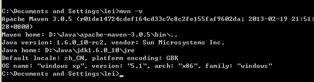
五、修改本地仓库
修改我们仓库地址，仓库用于存放我们项目所依赖的所有jar包。
我的仓库路径：D:\apache-maven-repo----这个路径是自己创建的，你可以将路径创建在任何位置。
打开D:\apache-maven-3.0.5\conf目录下的setting.xml文件，设置成我们创建的仓库路径
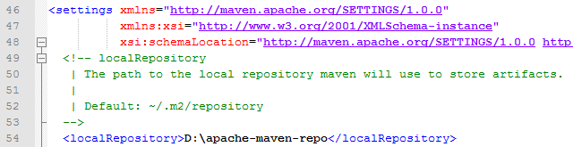
下面我们用一个命令验证一下。打开命令提示符，输入：mvn help:system
该命令会打印出所有的java系统属性和环境变量。这些信息对我们日常的编程工作很有帮助。
如果运行的过程中没有错误，打开我们仓库（D:\apache-maven-repo）会发现里面多了一些文件。这些文件就是我们从maven的中央仓库下载到本地仓库的。
KenSite所使用的MAVEN仓库下载地址，已经下载好了所需jar包，只多不少。https://yunpan.cn/cYm9tuuNH7mnm访问密码9177
一、初始化数据库
1）、自行创建用户名及密码
2）、执行sql语句，创建表和初始化表数据src/main/resources/db/sys/*.sql
3）、修改项目数据库配置文件src/main/resources/kensite.properties
二、启动并访问项目
1）、运行项目根目录下bin/clean.bat
2）、运行项目根目录下bin/run-jetty.bat
 3）、浏览器地址栏访问：
3）、浏览器地址栏访问：http://localhost:8080/kensite/
 4）、管理员用户名密码：
4）、管理员用户名密码：system/system

一、MAVEN配置
1）、打开eclipse，进入window-preference-Maven
2）、设置maven安装路径
 3）、设置本地库地址
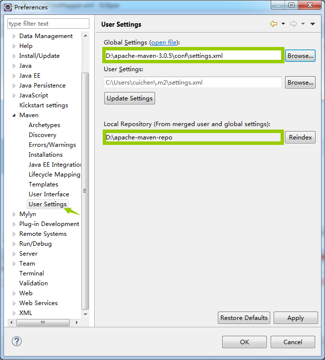
3）、设置本地库地址
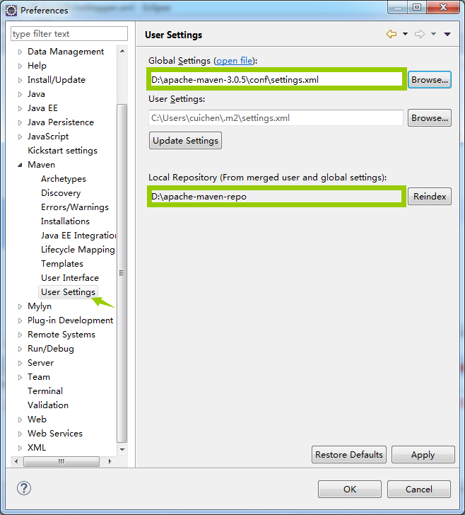
二、启动并访问项目
1）、项目导入到eclipse
2）、右键项目Run As-Run Configurations...

 3）、浏览器地址栏访问：
3）、浏览器地址栏访问：http://localhost:8080/kensite/
4）、管理员用户名密码：system/system
基础开发
一、创建表结构
1）、创建是数据库表
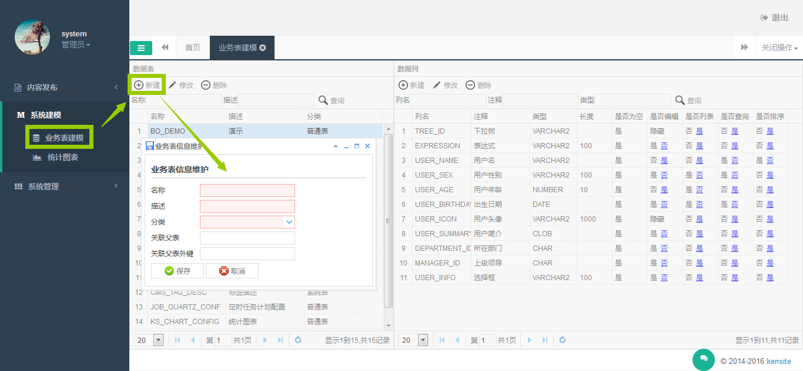
2）、创建数据库字段
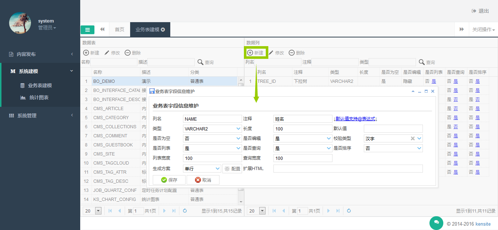
3）、配置数据库字段
 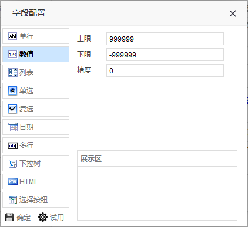
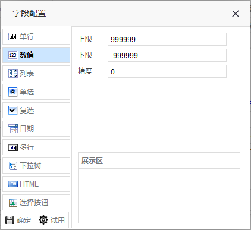
 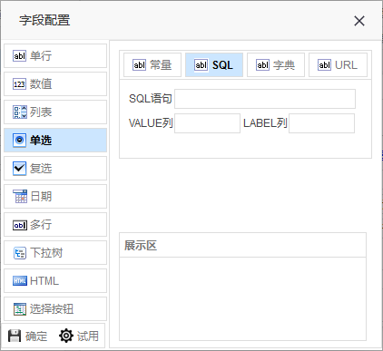
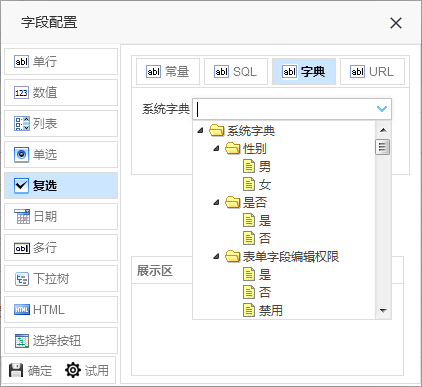
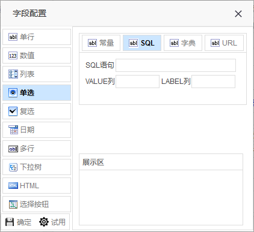
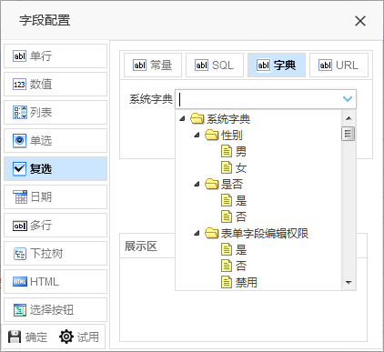


 4）、修改代码生成器配置文件
配置文件位置
4）、修改代码生成器配置文件
配置文件位置src/test/java/generator.xml
5）、生成代码
修改表名并运行src/test/java/cn/org/generator/GenerationTest.java
6）、配置系统菜单及访问权限
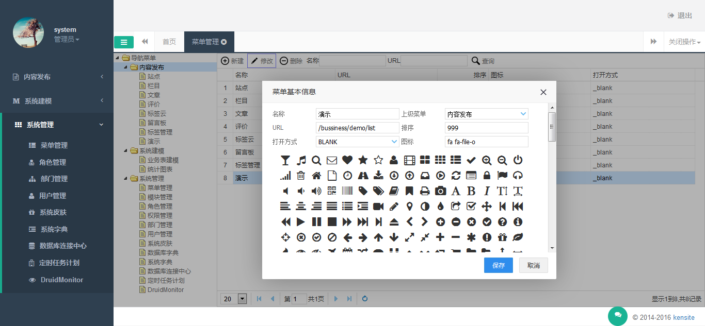
 7）、重启服务，完成
7）、重启服务，完成
 8）、新增修改删除导出等基础操作完成
8）、新增修改删除导出等基础操作完成
进阶开发
敬请期待...
<!doctype html>